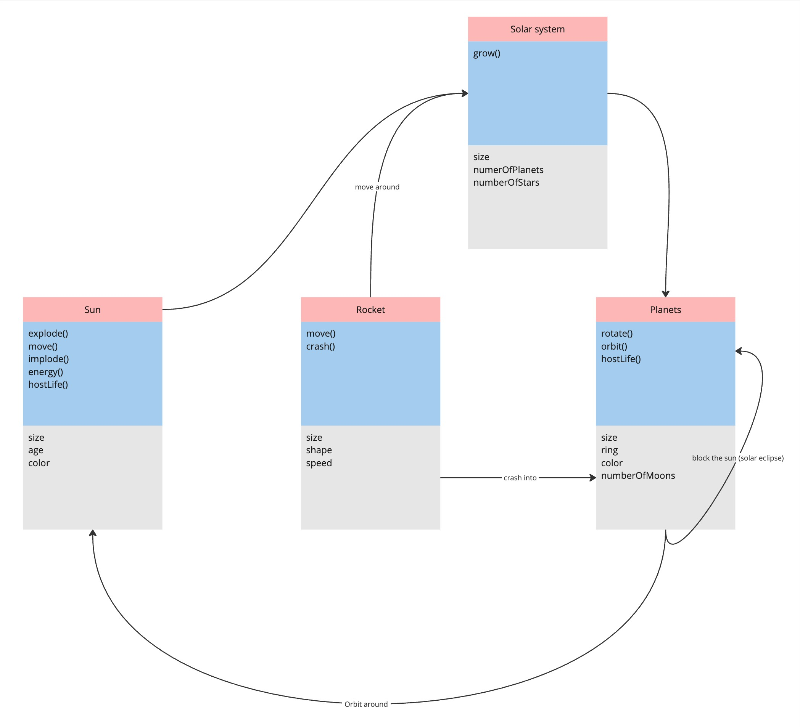
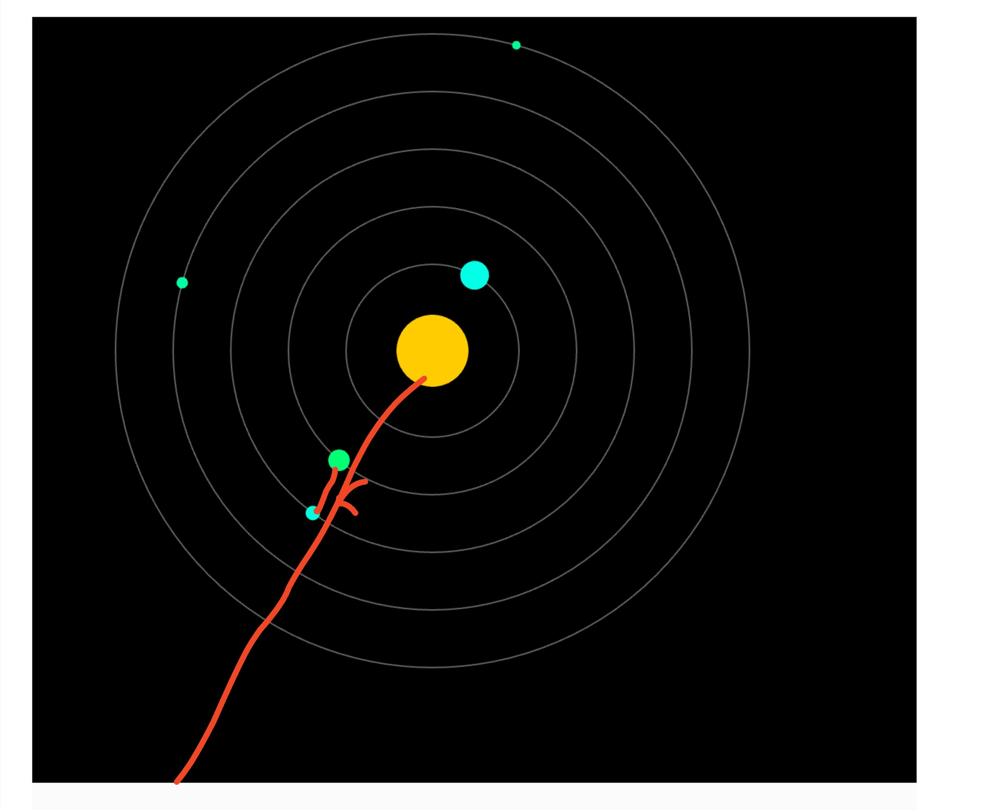
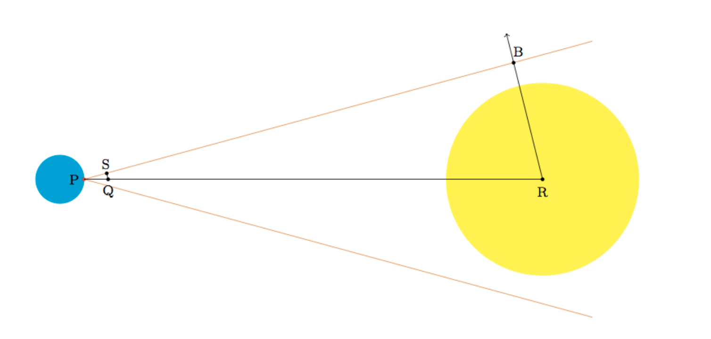

- The planets revolve around the sun
- Display the solar eclipse, that is, when one planet is blocking the other.
- If a rocket crashes into a planet, it crashes and is removed from the system.


- To calculate the solar eclipse, you need all sorts of math.
- Instead of an eclipse, I decided to map the display a line if the planets got within 40 pixels of each other.